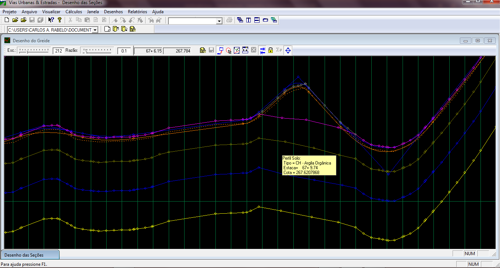

Desenho do Greide
Desenho do Greide:
Visualização simultânea dos 3 eixos
Diálogo de Configuração do Greide
O Programa Vias Urbanas & Estradas Possibilita que o greide seja completamente projetado na tela do computador, sem nenhuma necessidade de se recorrer à prancheta. O programa possui ferramentas que habilitam a projetar o greide usando-se apenas o mouse. Usando apenas o mouse pode-se incluir, excluir ou alterar PIVS, e estas alterações podem ser imediatamente recalculadas através do botão Calcular Volumes e os novos valores dos volumes estão prontamente a disposição do projetista. Este processo torna o tedioso trabalho de balanço dos volumes muito rápido e eficiente.
O programa Vias Urbanas & Estradas também permite que se visualize o greide e as seções ao mesmo tempo e qualquer alteração no greide é imediatamente refletida no desenho das seções. Esta característica permite ao projetista uma visão imediata das conseqüências das alterações no greide e torna o processo de projetar o greide muito dinâmico: sem solicitar nenhum recálculo o projetista visualiza imediatamente o que ocorreu nas seções, como por exemplo, se os off-sets ultrapassaram um determinado limite ou se a seção esta cortando ou aterrando muito nos bordos. Isso permite um ajuste muito mais rápido do greide. Ao se passar o mouse sobre um ponto de terreno a seção desta estaca é mostrada no desenho das seções. Ao passar o mouse sobre os pontos de terreno, os dados desta seção são mostrados em um diálogo próximo ao ponto. Todas estas propriedades podem ser ligadas ou desligadas a qualquer momento, através do Diálogo de Configuração do Desenho do Greide. Pode-se também a qualquer momento, solicitar o cálculo dos volumes através o botão Calcular Volumes na barra de ferramentas.e os novos valores dos volumes estrão prontamente a disposição do projetista. Este processo torna o tedioso trabalho de balanço dos volumes muito rápido e eficiente. Abaixo um exemplo da janela de desenho do greide.

Tela do projeto do greide
O programa Vias Urbanas & Estradas permite também que se alterem as seções transversais simultaneamente com o projeto do greide. Pode-se, incluir excluir e alterar qualquer ponto, desde que estejam no terreno ou fora da pista de rolamento na janela da seção que é apresentada ao lado da tela do greide. Para maiores detalhes sobre o desenho das seções veja o Desenho das Seções.

Tela do projeto do greide com os perfís geológicos
Direitos Autorais © (2010 - 2015) - Boole Software LTDA - Todos os direitos Reservados.
Created with the Personal Edition of HelpNDoc: Generate Kindle eBooks with ease